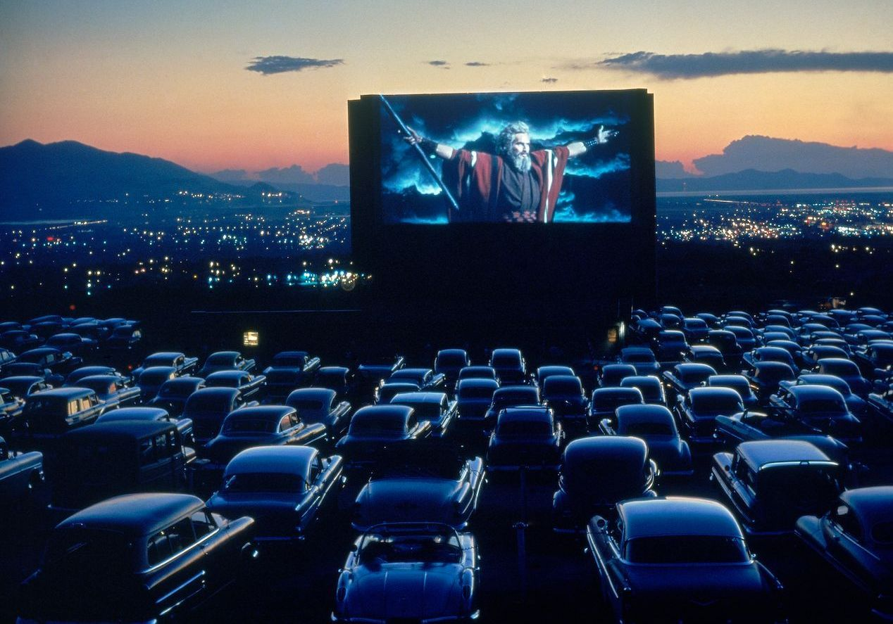

Concert, plein-air ; confinement, enfer ?
Voilà comment résumer les 4 mois à venir pour l’industrie de la musique.
Trouver des solutions pour faire perdurer la fête.

Le 15 avril 2020 la culture est foudroyée par le coronavirus. Emmanuel Macron, le président de la République française, présente les mesures mises en place de ce confinement. Le choc économique est grand. « Les grands festivals et événements avec un public nombreux ne pourront se tenir au moins jusqu'à mi-juillet prochain. ». Ces dernières années, les festivals et les spectacles se déroulaient principalement l’été. L’impact sur les retombées touristiques et artistiques sera colossal. Mais les artistes et les pays ont trouvé la parade. Les drive-in concerts et le virtuel.
Du plein-air …
L’expérience du drive-in débuta en 1933 avec des séances de projection cinématographique, mais le drive-in concert est la dernière trouvaille du Danemark, de l’Allemagne et de nombreux pays européens. Au lieu d’annuler les différents concerts les artistes ont cherché à se produire devant d’innombrables voitures remplies de passagers. Le concert est transmis sous fréquence radio, l’artiste restant sur scène est visible depuis la voiture. Les restrictions sanitaires sont respectées, il est évidemment strictement interdit de sortir de son véhicule. Une évaluation a prouvé que l’évacuation de 500 voitures lors de la fin d’un concert était de 30 minutes. Elle est bien plus rapide et sûre que lors de concerts normaux. Au vu des récentes déclarations d’experts en médecine, le retour à la normale des concerts est prévu pour l’automne 2021. Le drive-in concert reste donc une idée qui pourrait arriver en France. Certains sont contre, soulignant le caractère dramatique pour l’écologie, d’autres, comme une structure francilienne, travaille à l’organisation d’un tel événement pour l’été.
… Au virtuel
L’autre solution est le concert virtuel. Le 25 avril 2020, le rappeur Travis Scott a fait un concert virtuel sur le jeu vidéo Fortnite. Son avatar géant rassemble 27 millions de joueurs spectateurs au même moment sur le jeu. Une opération digne des plus grandes productions qui arrange l’industrie musicale et du jeu vidéo, puisque le nombre de stream a explosé après l'événement. Le nombre de cosmétiques payants, lui aussi, proposé par le jeu a fait plus d’un heureux. Cette perle rare attire d’autres grands artistes et jeux, tel que le célèbre jeu cubique Minecraft organisant un festival de rock virtuel, une fois de plus gratuit. Et la France dans tout ça ? Le rappeur français Alonzo a organisé son concert en ligne sur le jeu multijoueur GTA V.
Le jeu vidéo et le drive-in concert viennent donc à la rescousse de la musique. La parade est toute trouvée. Elle prendra même, après le coronavirus, un nouveau tournant économique dans un domaine en difficulté. La question se pose maintenant qu’en est-il des musées et du secteur de la culture, quand feront-ils le pas ?